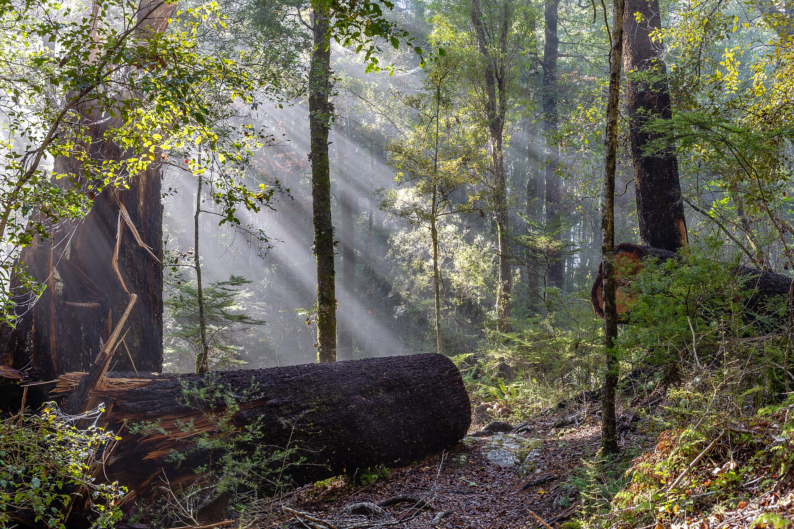
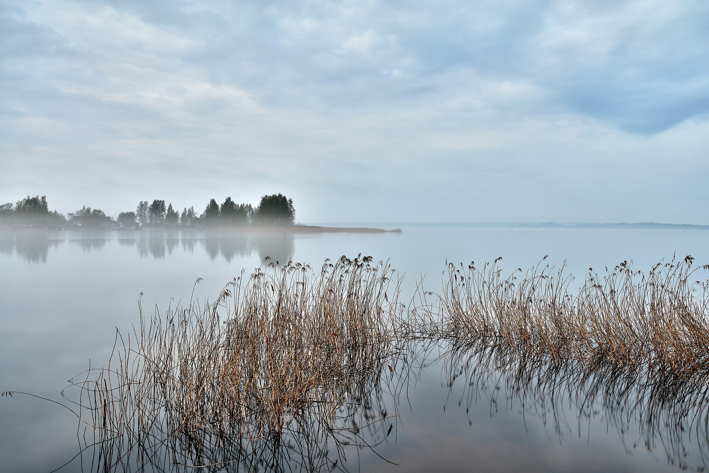
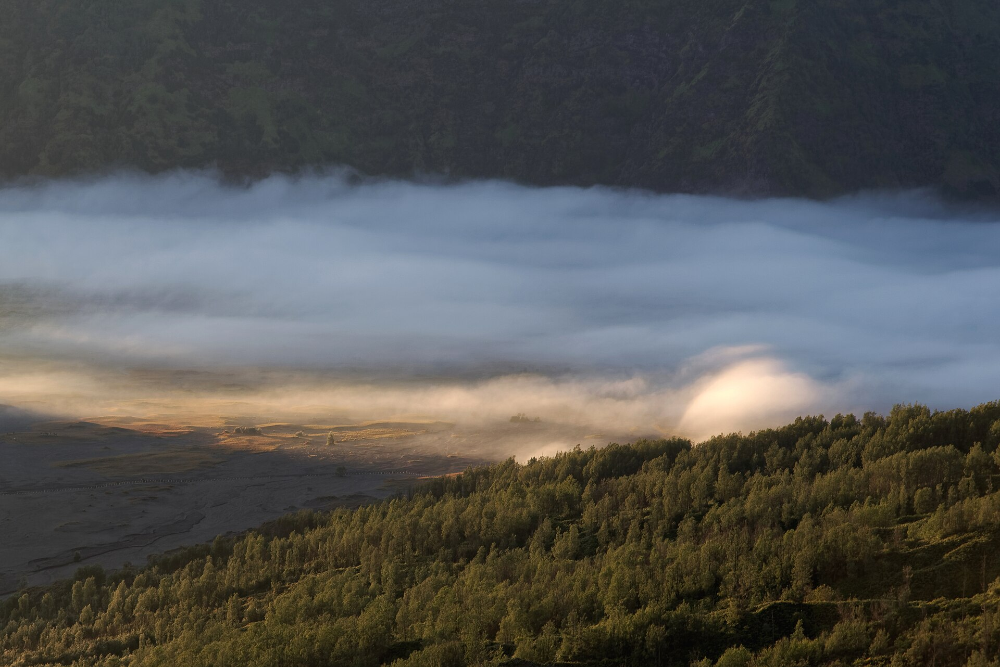
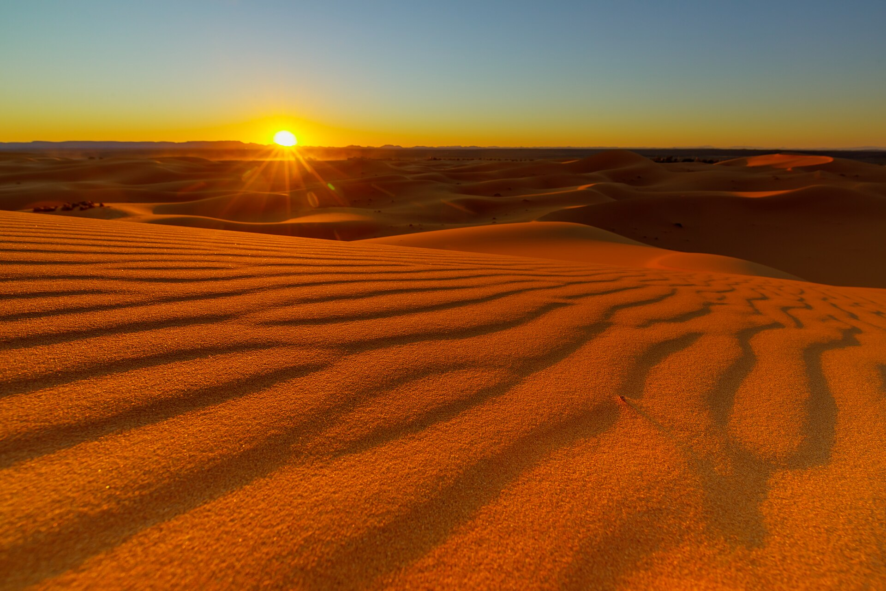
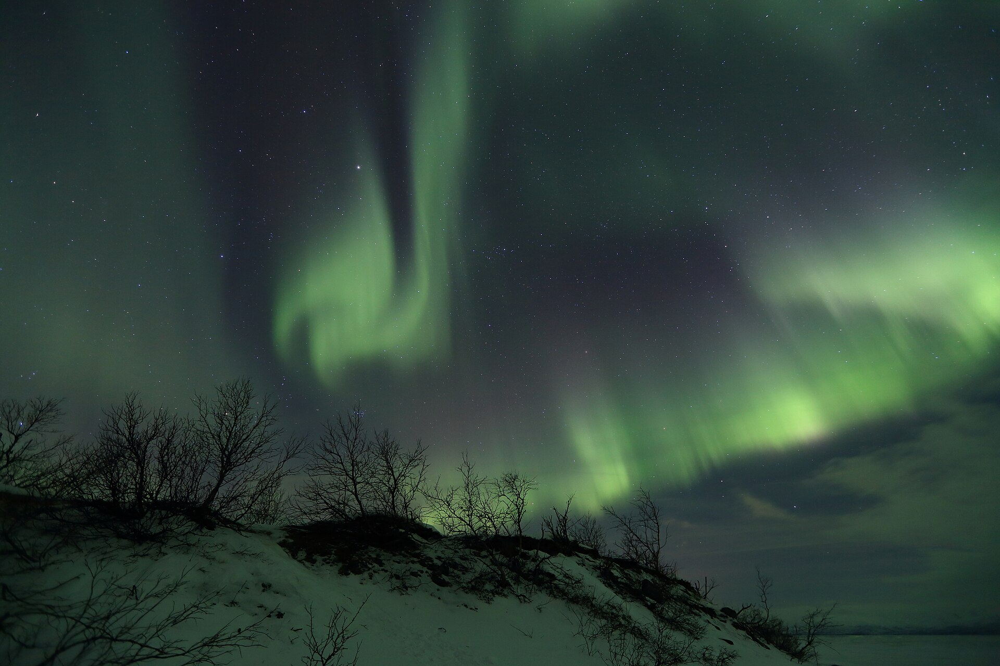
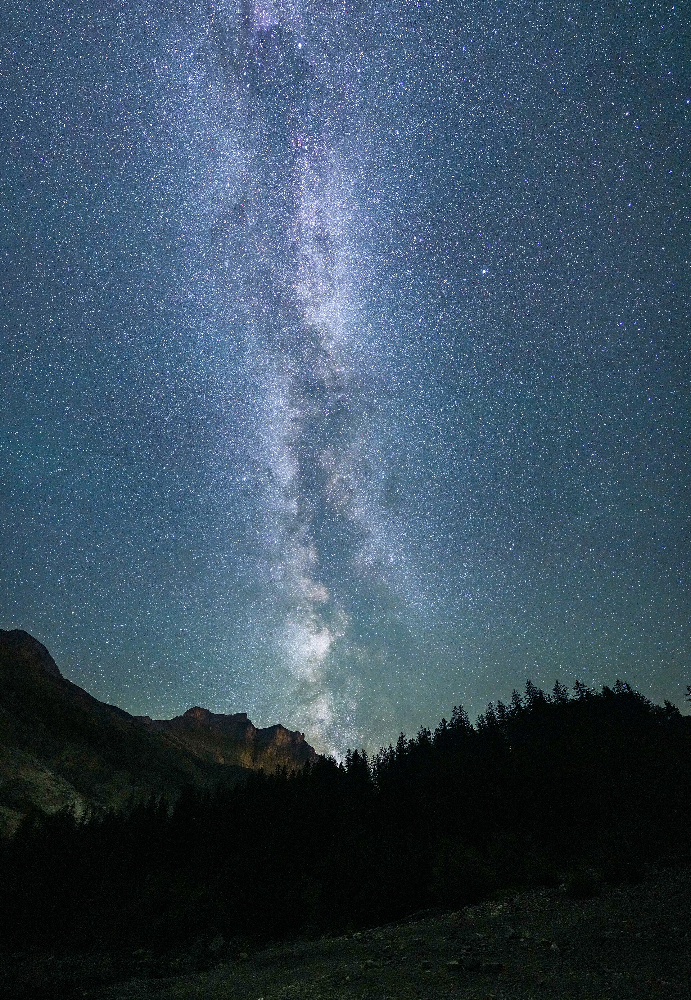
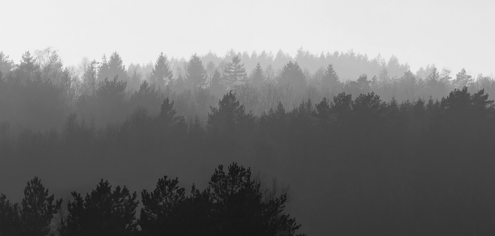

Forest PavilionCultural, 2024
Lake HouseResidential, 2023
Ridge LookoutPublic, 2022
Dune RetreatHospitality, 2021
Aurora CabinResidential, 2020
Dark Sky HutPublic, 2019
Sep 2026Building for fog: notes from the coastA small studio for architecture and landscape, working where buildings meet weather.
Founded in a converted boathouse, we design quiet places that age well: houses, pavilions and public rooms shaped by light, wind and the slow change of seasons.
We're hiring.
"Buildings that seem to have grown out of the weather."
Coast & Form, 2025
Have a site, a question or a half-formed idea? Tell us about it.